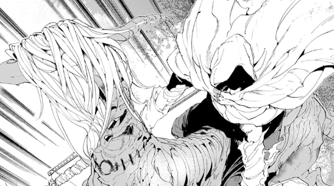
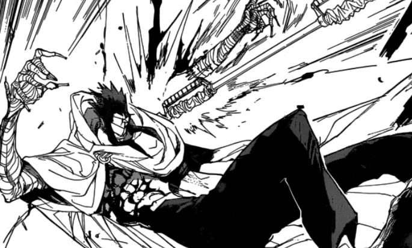

Chapter 4.3 - Mistakes
The mysterious vial releases a purifying smell and a green liquid but it only lightly touches the beast. Face-to-face, you gulp at the sight of its single eye hidden behind the face mask. It grins at your lousy attempt and opens it's mouth wide - its sharp and infinite teeth make you tremble at the scene.
All of a sudden, you remember something. You've read about this before. On a tattered, worn book hidden behind the fantasy bookshelf, was a picture of the creature's same features. It's title? A Demons Folklore.
You duck, as if to protect yourself, and wait for the terror at the hands of the demon. It grabs you by the waist but before it cleanly bites your skin off, someone swoops you off, running in the opposite direction. They take you by the stomach and runoff, your sight facing backwards.
You've already created a scene that captures the sight of every demon and now watch as their figures disappear while shallow, unkempt houses take shape.
They hide within an old building block with a half-broken wooden door and shuts it hurriedly. It embodies a mask as well but you wonder why it saved you in the first place. He quickly reveals himself - its Nicholas.
Not giving you time to ask questions, he scolds you in frustration.
"How could you waste such a precious thing for nothing! That was supposed to be a way out! Don't you understand the trouble you've created!"
No, you didn't. Your mind has been a wreck ever since coming here. You should've just listened to mother instead of forging your own path. You can hear shrieking noises in the distant. Now, after calming down a bit, he hands the potion over to you.
"Drink it."
"No. I can't. Wasn't this supposed to be for father?"
"There's no other way now... drink it and promise me you'll survive." he tears up a little while the noises outside are much closer.
You do as he says. This vial is much more fragrant than mothers and tastes lighter than you expected - like milk.
"The thing above your head. It's gone now" he says.
Demons burst through the door and someone, in particular, stands out.
"I told you to be careful, brother. Didn't I tell you Hide and Seek was my favourite game~" 
Before a massive death sword slashes him in half, he gives a slight smile to you, it was the first you've ever seen.
You are taken away to their castle and pass by the prison where other people with marks on their heads are gathered.
They take you higher and you are kneeling before their king.
"We meet again, Isabella's child. How has your father been doing?"
To be continued...
There's more choices to select and more truth to be revealed.